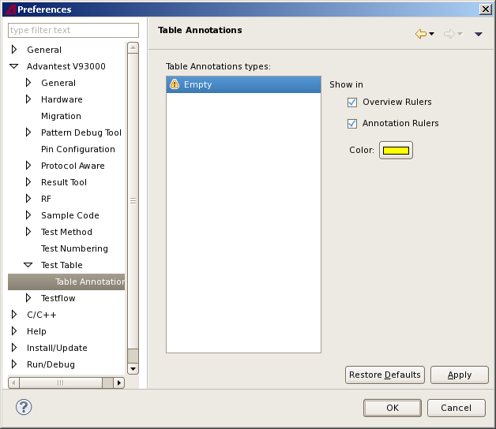

Table Annotations preference page
- Show in Overview Rulers
Specify whether the selected annotation type is shown in the Overview Ruler on the right and bottom of the Flow Data editor.
- Show in Annotation Rulers
Specify whether the selected annotation type is shown in the Annotation Ruler on the left and top of the Flow Data editor.
- Color
Specify the color for the annotation marker of the selected annotation type on the right and bottom of the Flow Data editor.

Functional changes
- Introduced in SmarTest 6.5.0